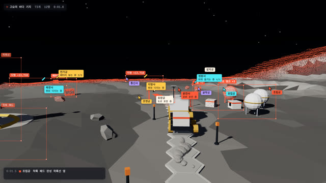
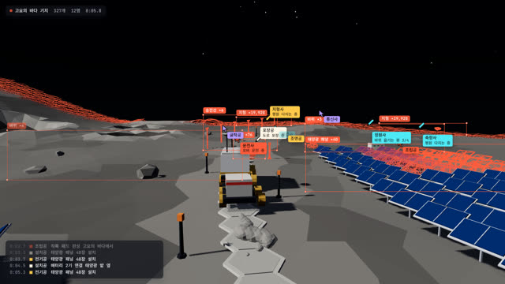
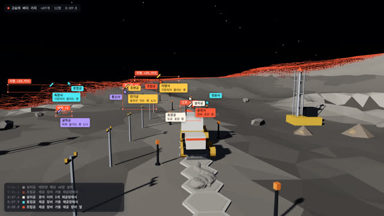
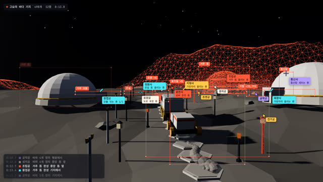
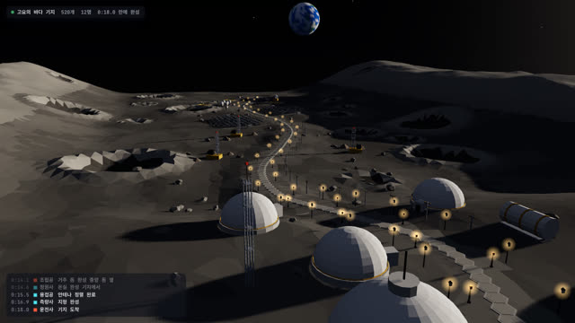
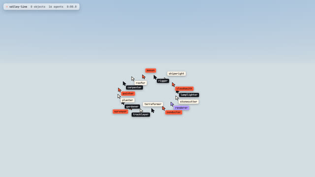
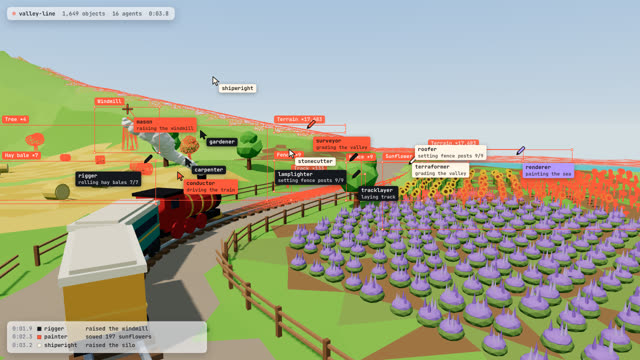
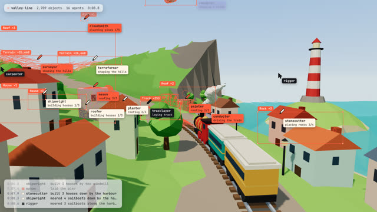
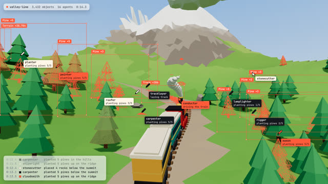
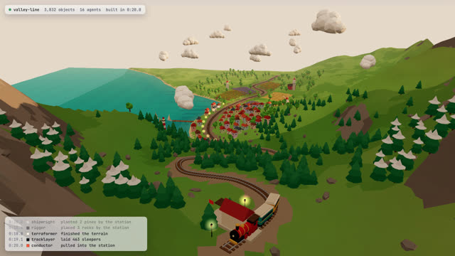

작업 흐름
- 입력
- 주제 하나(계곡을 달리는 기차, 달 기지로 가는 로버, 과수원 노면전차 …)
- 브리프
- 주제마다 새로 쓰는
BRIEF.md: 탈것과 노선, 구간 3–5개와 구간마다 서는 것, 크루 이름 · 색 · 맡는 일, 태그 · 로그 문구(한국어 포함), 하늘과 빛, 마지막 장면, 스틸 검토 기준 - 세계
- 노선 → 땅(높이와 색) → 선로 → 물건 종류(코드 도형) → 배치 → 일(올리기 · 건너뛰며 짓기 · 따라 놓기 · 줄줄이 쓸기)과 앞서가는 작업(선로 · 지형 · 바다) → 탈것 → 카메라와 빛. 일마다 제때 닿을 수 있는 크루에게 배정되고, 물건은 커서가 닿는 순간 지어짐
- 확인
- 일정 점검(빈 크루 · 탈것보다 늦은 물건 · 끝날 때 미완성), 글꼴, 결정성, 빈 프레임, 카메라와 크루가 화면 안에 있는지 보는 자동 점검과 콘택트 시트
- 출력
- 30fps MP4(1920×1080 또는 1080×1920, 효과음 합성), 라이브 페이지
node swarm-world/scripts/new-world.mjs my-world --from moon-base # BRIEF.md부터
cd my-world
node ../swarm-world/scripts/check.mjs world.html
node ../swarm-world/scripts/render.mjs world.html --sheet 12 --scale .5
node ../swarm-world/scripts/render.mjs world.html --sfx요구 사항: Node + Playwright Chromium, ffmpeg. 네트워크가 필요 없습니다(GPU가 없으면 1080p 한 프레임 약 0.5–1초). 단계별 순서는 SKILL.md에 있습니다.
샘플
원본 데모에 없는 주제 「고요의 바다 기지」(브리프부터 새로 설계), 원본 세계를 이 엔진으로 옮긴 「valley-line」, 시작용 템플릿 「orchard-line」의 장면입니다. 카드를 누르면 라이브 페이지가 열립니다.
고요의 바다 기지 · 새 주제 examples/moon-base · 18초 빌드
달 탐사 로버가 착륙장에서 분화구 가장자리의 기지로 가는 동안 한국어 크루 열두 명이 길과 시설을 짓습니다. 검은 하늘과 별, 회색 레골리스, 육각 타일 도로, 마지막엔 지평선 위의 지구.

착륙장 · 3초타일 도로와 착륙 패드포장공이 로버 바로 앞에 육각 타일을 깔고, 조립공은 십자 커서로 착륙 패드를 올림

태양광 밭 · 7초패널은 한 줄씩 쓸어서전기공이 밭을 지그재그로 쓸며 「태양광 패널 까는 중, 2/4열」

채굴장 · 10초채굴 장비와 송전선용접공이 장비를 세우고 전기공은 기지까지 송전선을 따라 놓음

기지 · 14초돔이 솟는다거주 돔, 모듈, 온실, 안테나를 크루가 나눠 올림. 로그에 「거주 돔 완성 기지에서」

완성 · 26초지구가 뜬 지평선크루가 세션 표시로 돌아가고, 카메라가 기지 뒤로 떠올라 지나온 길과 지구를 봄
valley-line · 원본 세계 examples/valley-line · 20초 빌드
원본 데모의 세계를 이 엔진으로 옮긴 스타일 기준. 해바라기 · 라벤더 밭과 풍차, 항구 마을, 소나무 숲과 눈 덮인 정상역, 크루 열여섯 명.

시작 · 1초크루가 모인다커서들이 화면 가장자리에서 날아와 기차가 놓일 자리를 돎

밭 · 5초밭은 줄줄이, 풍차는 십자로painter가 해바라기를 한 줄씩, rigger가 풍차를 올리고, tracklayer는 앞에서 선로를 깜

항구 · 10초집 셋, 그다음 지붕 셋한 커서가 집 세 채를 올리고 지붕 셋을 얹음. renderer는 바다를 칠함

숲 · 15초다섯 그루씩 소나무크루 전체가 숲을 나눠 심고, 산은 앞에서 산호색 격자로 그려짐

완성 · 28초계곡 전체「built in 0:20.0」, 가로등과 등대가 켜지고 카메라가 돌아 지나온 길을 봄
orchard-line · 템플릿 templates/world.html · 12초 빌드
단계마다 주석을 단 시작용 세계. 노면전차, 사과 과수원, 마을, 언덕 위 천문대.
실제 작품
이 스킬을 만든 출처입니다. 원본 레포의 3D 부분(skills/swarm-build/examples/3d.html)을 보고 만들었습니다.
링크
- SKILL.md 워크플로
- 폴더 lib · scripts · references · templates · examples
- README.md 빠른 시작
- references/BRIEF.md 고정 vs 주제마다, 브리프, 검토 기준
- references/KIT.md World API
- references/LOOK.md 스타일이 읽히는 조건
- references/SOURCE.md 원본 데모와 가져온 것
- references/LESSONS.md 겪은 문제와 해결